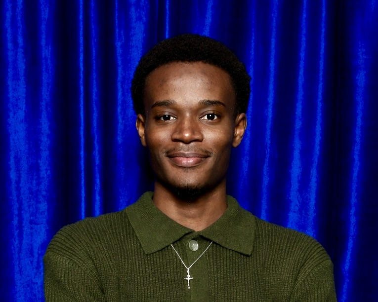

About

I'm a Computer Science student at New York University Abu Dhabi with a minor in Economics, graduating in 2027. I specialize in building full-stack applications and transforming complex data into actionable insights.
Most recently, I worked as a Research and Data Analytics Intern at ImpactTulsa, where I processed large-scale public sector datasets to support city leadership on public safety and education policy. I reduced data processing time by 30% and integrated crime data across 70+ census tracts to enable targeted intervention strategies.
My work bridges software engineering and data science — from Formula 1 analytics dashboards and car rental management systems to immersive VR museums. I'm driven by the challenge of turning technical complexity into elegant, scalable solutions.